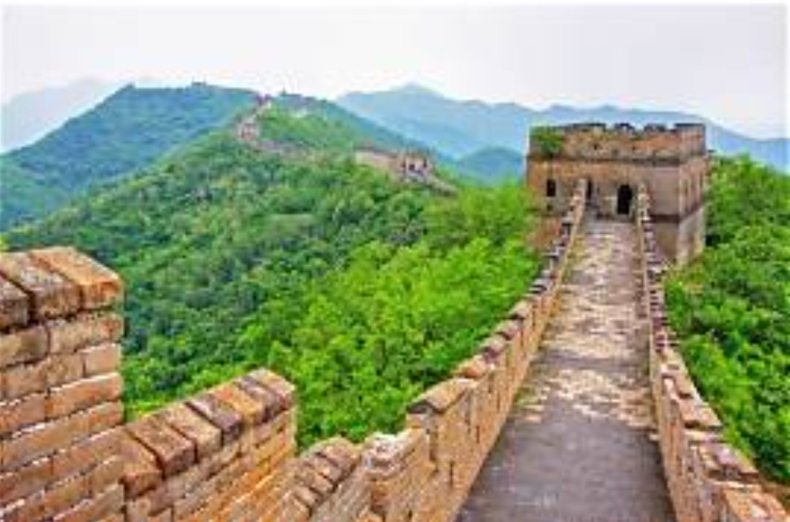
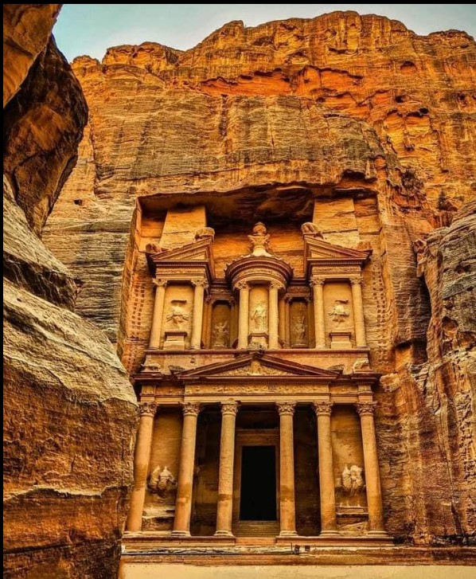
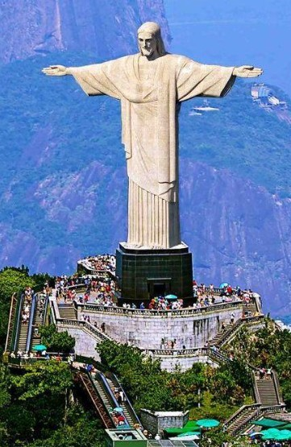

The Great Wall of China is one of the most famous landmarks in the world and one of the New Seven Wonders of the World. It was built to protect China from enemy invasions. The wall stretches for more than 21,000 kilometers across the country. It was constructed using stone, bricks, and earth over many centuries. The wall passes through mountains, forests, and deserts, making it a remarkable engineering achievement. It reflects the rich history and culture of China. Millions of tourists visit it every year. It is also recognized as a UNESCO World Heritage Site. The Great Wall is a symbol of strength, determination, and ancient architecture.

Petra is an ancient city in Jordan and one of the New Seven Wonders of the World. It was built by the Nabataean civilization over 2,000 years ago. Petra is famous for its beautiful buildings carved into pink sandstone cliffs. The Treasury is its most popular monument. The city was an important trading center. It also has temples, caves, and tombs. Petra shows the advanced engineering skills of ancient people. It is a UNESCO World Heritage Site and attracts visitors from all over the world. It is known as the "Rose City" because of its pink-colored rocks.

Christ the Redeemer is a giant statue of Jesus Christ located in Rio de Janeiro, Brazil. It stands on Corcovado Mountain and overlooks the city. The statue is about 30 meters tall. It symbolizes peace, love, and Christianity. It was completed in 1931 and is made of reinforced concrete and soapstone. Millions of people visit it every year. It is one of Brazil's most famous landmarks. The monument offers beautiful views of Rio de Janeiro. It is one of the New Seven Wonders of the World.

Machu Picchu is an ancient Inca city located high in the Andes Mountains of Peru. It was built in the 15th century and remained hidden for many years. It is famous for its beautiful stone buildings and mountain scenery. It is believed to have been a royal estate or religious center. The city shows the advanced engineering skills of the Inca civilization. It is a UNESCO World Heritage Site. Millions of tourists visit Machu Picchu every year. It is one of the greatest archaeological sites in the world.

Chichen Itza is an ancient Mayan city located in Mexico. It is famous for the Temple of Kukulcan, also known as El Castillo. The pyramid reflects the Mayans' knowledge of astronomy and mathematics. Chichen Itza was once an important political and religious center. It contains temples, ball courts, and observatories. It is a UNESCO World Heritage Site. Millions of visitors come here every year. It is one of the New Seven Wonders of the World.

The Colosseum is a famous amphitheater located in Rome, Italy. It was built nearly 2,000 years ago. It was used for gladiator contests and public events. The Colosseum could hold about 50,000 spectators. It is an excellent example of Roman architecture and engineering. Even after earthquakes, much of the structure still stands. Millions of tourists visit it every year. It is one of the New Seven Wonders of the World and a symbol of ancient Rome.

The Taj Mahal is a beautiful white marble monument located in Agra, India. It was built by Emperor Shah Jahan in memory of his wife Mumtaz Mahal. Construction began in 1632 and took around 22 years to complete. It is famous for its beautiful gardens, carvings, and architecture. The Taj Mahal changes color at different times of the day because of sunlight. It symbolizes eternal love and is a UNESCO World Heritage Site. Millions of tourists visit it every year. It is one of the New Seven Wonders of the World.